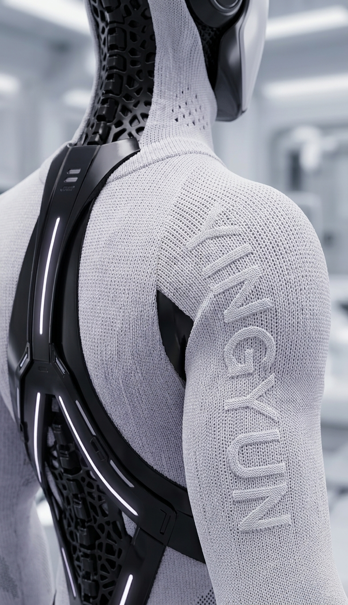
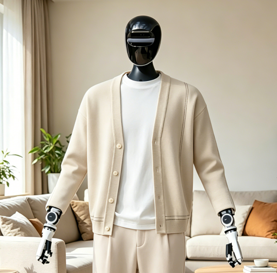

01 / ROBOSKIN行业观察 · 8 分钟阅读
机器人为什么需要软皮肤？它不只是给机器人穿衣服
当机器人进入展厅、医院、家庭和服务场景，表面材料开始同时承担安全接触、外观亲和、维护便利与功能集成。软皮肤不是硬壳的简单替代，而是一层新的交互界面。
- 硬壳、硅胶与针织软皮肤如何选择
- 科研样机为什么需要可快速迭代的外层
- 从外观包覆走向功能界面
围绕机器人软皮肤、针织结构、散热维护与触觉集成，持续输出可验证、可讨论的行业观点。
从真实项目问题出发，建立机器人外层材料的工程判断框架。

01 / ROBOSKIN当机器人进入展厅、医院、家庭和服务场景，表面材料开始同时承担安全接触、外观亲和、维护便利与功能集成。软皮肤不是硬壳的简单替代，而是一层新的交互界面。
 02 / THERMAL
02 / THERMAL
03 / CUSTOM我们向机器人、具身智能、材料与智能制造领域媒体开放采访、技术选题和资料合作。已发布报道将在本页持续更新，并保留原始来源链接。
灵躯工纺定位、技术路线、应用方向和标准联系方式。
可围绕软皮肤、散热、维护、传感集成提供技术背景。
可按媒体需求提供产品细节、工艺过程及采访回复。
我们可以先判断包覆边界、运动区域、散热位置与打样路径。